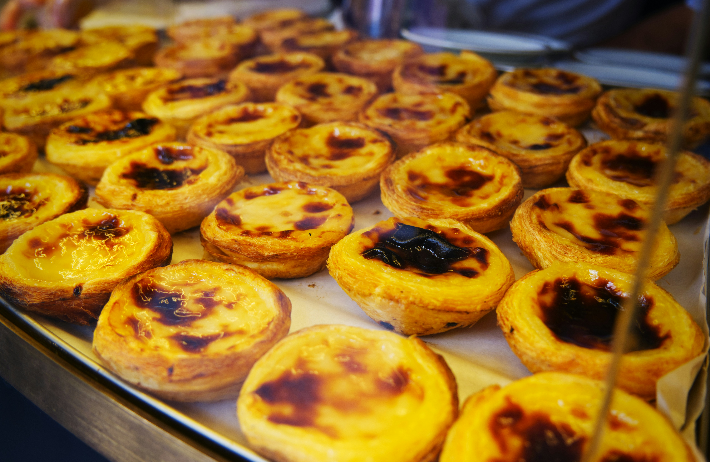

Crisp, slightly salty pastry with a molten, spiced filling: these custard tarts are a Portuguese classic for a good reason
Unlike shortcrust, this is a laminated pastry in which the fat acts as a sandwich filling between sheets of dough, separating them into the shatteringly crisp layers that are the hallmark of a proper pastel de nata. Having mixed flour and water, kneaded it until it comes together into a smooth dough (though a certain amount of gluten is required to hold the leaves together, overworking the dough will make it tough) and left this base pastry to rest, it’s time to introduce the butter. As pastry chef Nicola Lamb observes in her incredibly detailed exploration of the subject on her Substack, Kitchen Projects (which should be required reading for nata nerds), “There are two camps when it comes to getting your butter into the dough. On one side you’ve got camp ‘spread’, a traditional method which involves smearing soft butter on to the dough and then performing the folds. The second is camp ‘lock in’, which involves using firmer butter and a traditional method similar to how you’d approach a croissant or making puff pastr